Hello! I am Everly Wan, a high school student with a passion for academic excellence, creative pursuits, and meaningful contributions to my community. Since immigrating to the U.S. in 2022, I have embraced challenges and opportunities to grow as a learner, participant, and leader. Explore my journey, achievements and aspirations through this portfolio!
Visit Me to Know MoreYou will notice my growth and progress throughout my 4 years in high school.
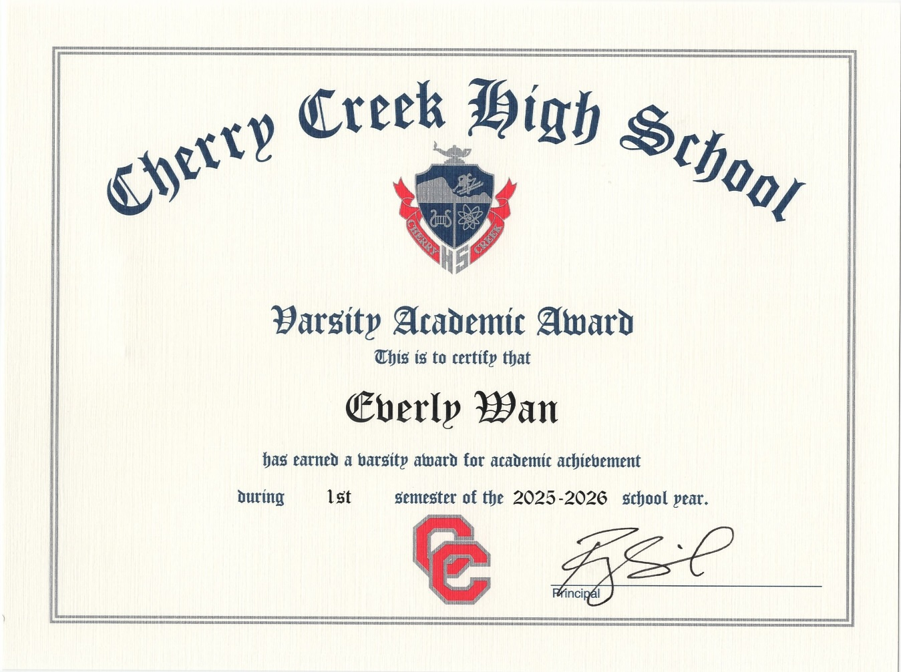
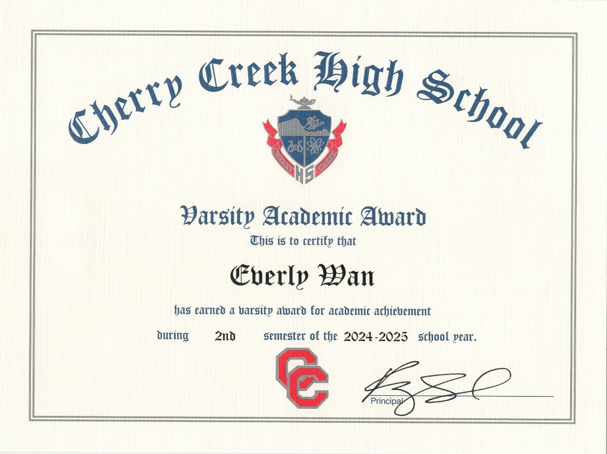
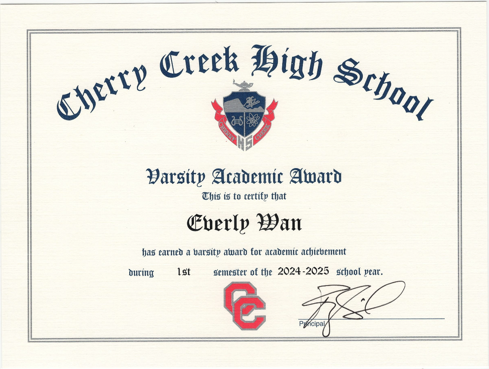
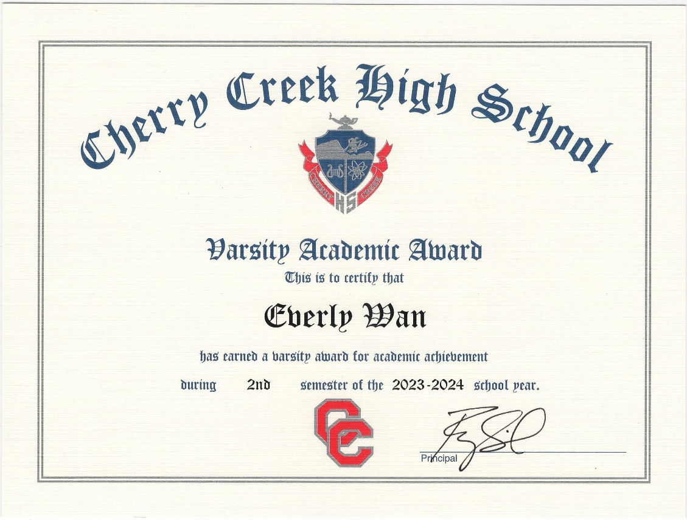
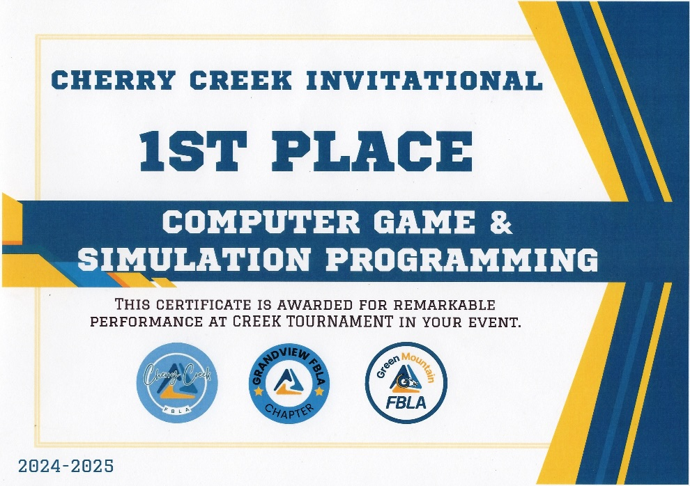
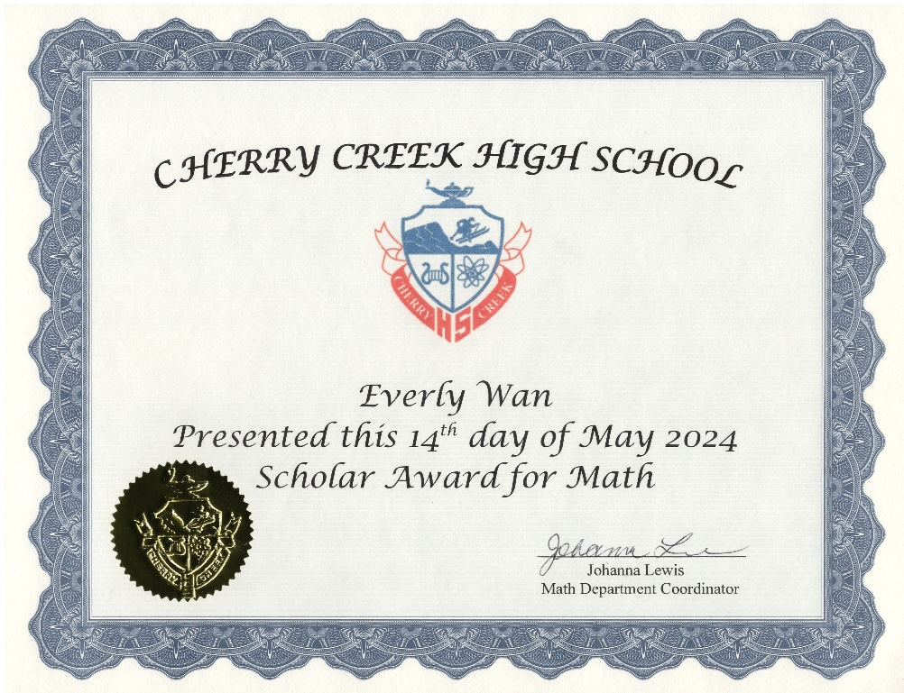
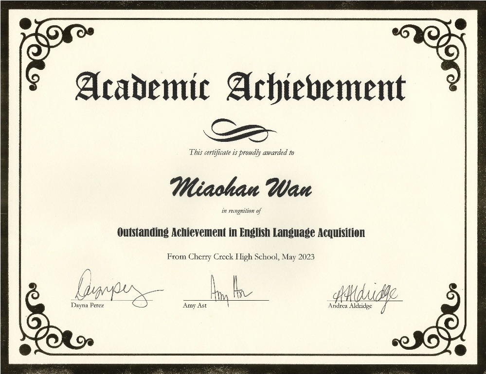
I have a deep passion for athletics and an active lifestyle. I regularly participate in various sports and events, including Bolder Boulder 10K running race and dragon boat competition. In addition to these exciting challenges, I maintain a consistent routine of running, which keeps me energized and focused.
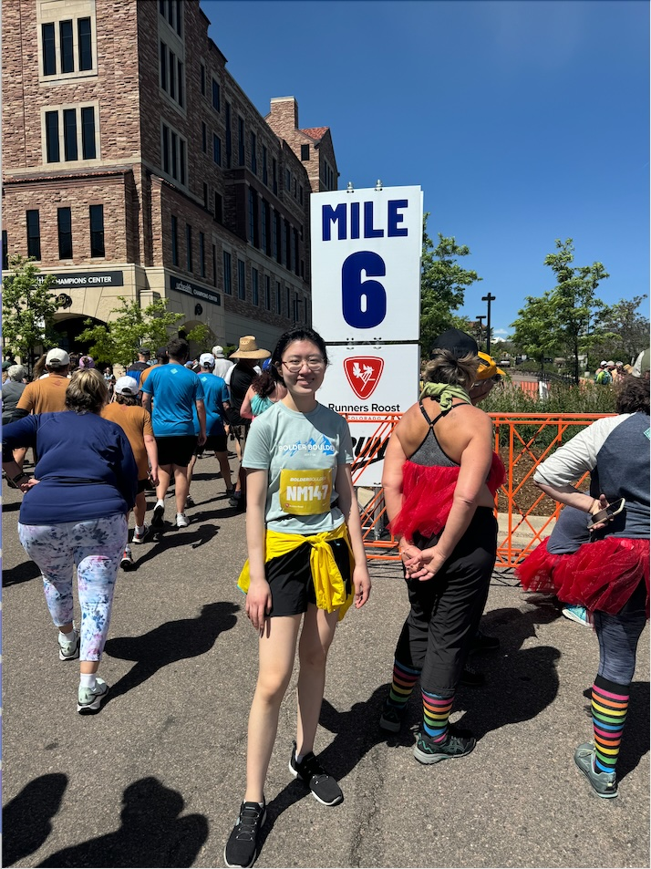
The Bolder Boulder is an annual 10-kilometer run in Boulder, Colorado.
I participated in the Bolder Boulder 10K event in the past 3 years, which has become a personal tradition
and a way to celebrate my passion for running alongside a larger community.
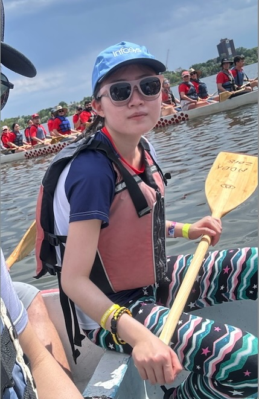
One of my favorite cultural events is the annual Dragon Boat Race, which I've participated in and enjoyed deeply.
I love the energy of the race, the teamwork it demands, and the cultural pride it inspires. Paddling together with others,
feeling the water rush by, and hearing the crowd cheer - it's the unforgettable experience that connects me to a larger community.
For me, the dragon boat race isn't just about winning - it's about spirit, tradition, and joy.
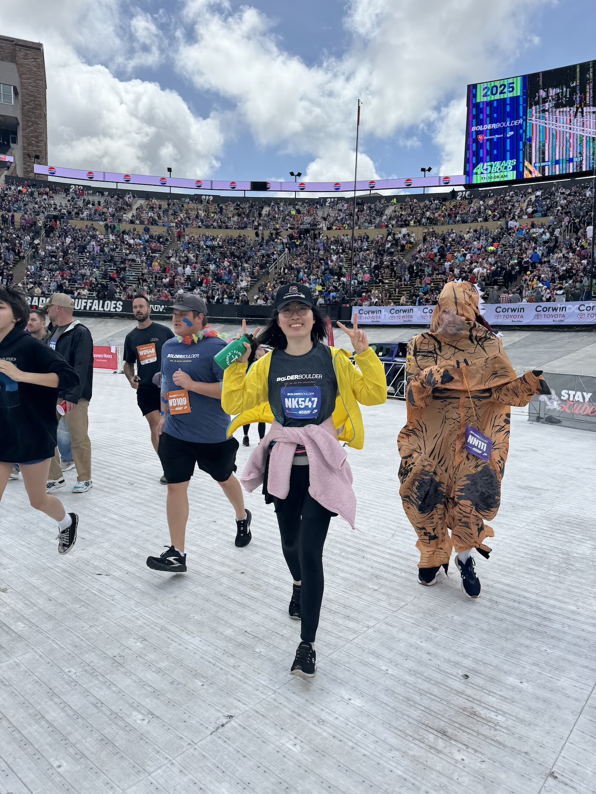
Running has always been a part of who I am. It's more than just a form of exercise - it's a commitment I've kept to myself over the years.
I usually run twice a week, not out of obligation, but because it brings me clarity, strength,
and a sense of peace.
Whether I'm training alone or running with thousands, this is where I feel most focused, most free, and most myself.
Beyond maintaining A's in all my courses, I focus on connecting what I learn to real life. Through my YouTube channel, where I teach math, economics, chemistry, and vocabulary, I've learned how sharing knowledge strengthens understanding. Volunteering at the Denver Rescue Mission reminds me that learning gains value when it helps others. My Voice Acting projects and game programming let me blend creativity with logic. Across all these experiences, my goal has been simple - to keep learning, creating, and using my skills to make a positive impact.
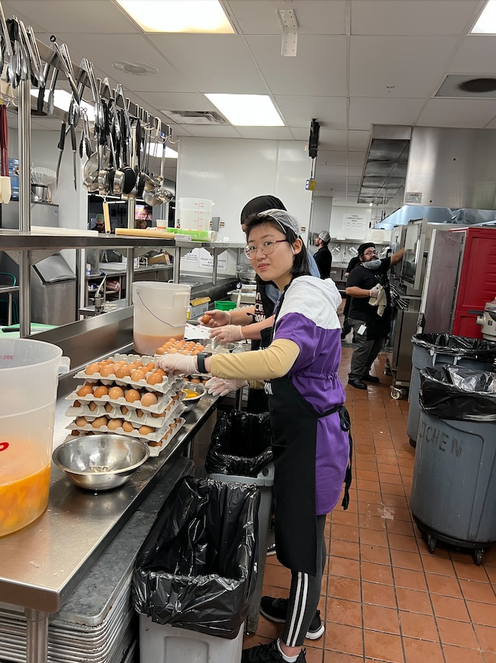
I volunteer regularly at the Denver Rescue Mission, where I help serve meals and support community outreach programs for individuals experiencing homelessness.
Through this experience, I've learned the importance of empathy, teamwork, and service to others.
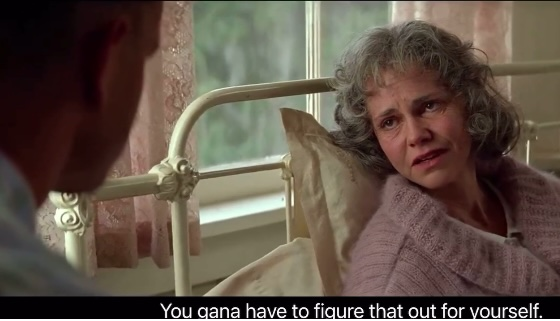
I have a deep passion for voice acting, a journey I began when I was 10 years old in my elementary school, starting with simple
sentences, songs, and movies before progressing to classic films.
I truly enjoy the process, often dedicating hours to perfecting
my craft. Voice acting not only helps me speak more naturally but also allows me to connect deeply with the characters in every movie.
Click Here to see if you can tell it is from me :)
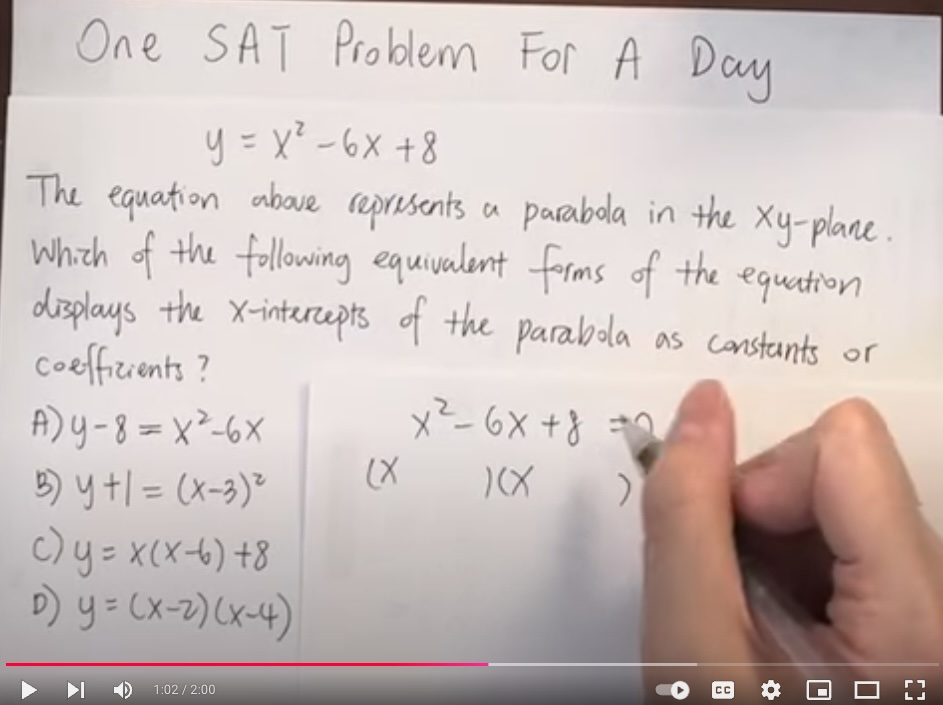
My YouTube channel began as a way to share what I'd learned in math, economics, chemistry, and vocabulary. Over time, it became a space to turn complex ideas into something simple and engaging. Creating each video - designing lessons, editing clips - deepens my understanding and sharpens how I express ideas.
What drives me isn't views, but the act of teaching itself. Knowing how it feels to struggle, I want to make learning easier for others. The channel reminds me that real learning comes from patience, persistence, and sharing knowledge.
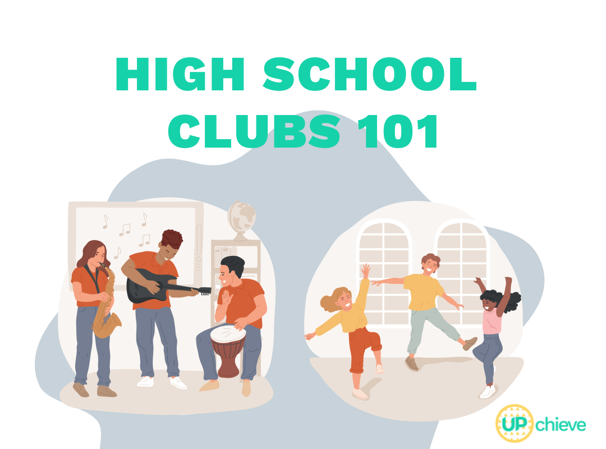
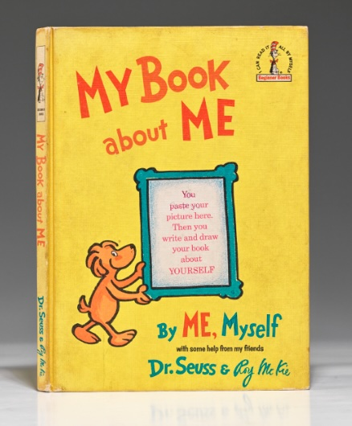
Inspired by my illustrator uncle, I began writing my own novel in middle school and finished it in high school - complete with my own illustrations.
Combining writing and drawing let me build a world that felt alive and personal, teaching me patience, creativity, and how to turn inspiration into something real.
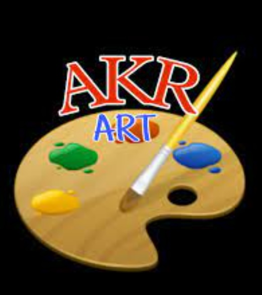
Like many kids, I've always enjoyed drawing.
I'm passionate about it and have spent several years practicing different styles, including
sketching, quick sketches, cartoons, watercolor painting, and oil painting.
I even like to add little drawings to my notes whenever
inspiration strikes.
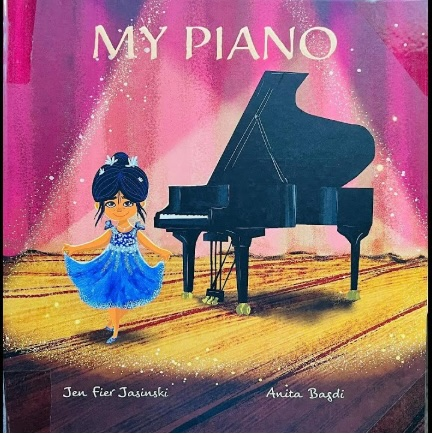
I began learning piano from my mom, who encouraged me to pick up a musical instrument.
While I'm not a professional player, I still enjoy playing
a few times a week purely for fun, without the pressure of formal lessons anymore : )
I worked part-time during the summer of my sophomore year to learn independence and gain real-world experience.
The job taught me how to solve problems on my own, communicate clearly, and take responsibility in a team setting.
Working with people from different backgrounds also helped me develop patience, cooperation, and early leadership skills that I continue to carry with me.
In high school, I chose to focus on programming courses, where I first explored game development through Java processing. I practiced extensively,
creating small games with Java, a powerful and versatile language.
I especially enjoy the satisfaction of debugging and making progress in my
projects. I also participated in district and state-level Computer Programming Competitions.
I have the privilege of meeting many amazing teachers in high school. They encouraged and supported me, helping me grow and succeed. When I moved to the US, I faced many challenges adjusting to the pace and improving my language skills. While voice acting helped me significantly, I still dedicated a lot of time to learning and self-improvement. I'm deeply grateful to my teachers, who not only imparted knowledge but also offered encouragement and made me feel truly supported and cared for.
Everly is a remarkable student whom I have had the privilege of teaching for the past few years in English classes. Throughout this time, I have been consistently impressed by her dedication, hard work, and unwavering commitment to her academic growth.
What makes Everly's accomplishments even more extraordinary is that she immigrated to the United States only three years ago. Navigating a brand-new educational system, culture, and language, she has made incredible strides in a remarkably short period. Her ability to adapt so quickly and excel in a second language is a true testament to her determination and intellectual strength.
Everly Wan is the hardest working student I have seen in my few years of teaching. I watched her everyday work through learning a new, very different language while excelling at her coursework.
Most high school students are not willing to put in the slightest extra effort to achieve deeper learning and Everly was willing to put an immense amount of extra work to translate assignments and outperform students that have every advantage.
She is incredibly thoughtful, kind, and advocates for herself. She will be a great addition to any university or community that she is a part of.
Everly is the most sincere, thoughtful learner in my English 11 classes. She cares deeply about not only learning the language with more fluency, but she strives to understand the content fully.
What sets Everly apart is the remarkable academic progress she has made since arriving in the United States just three years ago. Starting high school in a completely unfamiliar setting - with a new language, culture, and curriculum - Everly has risen to every challenge with quiet determination and grace. Rather than being daunted by the transition, she has used it as fuel to grow both academically and personally.
Everly is studious and academically focused. She takes control of her learning, putting in more effort than most not only because she's still perfecting her command of English, but also because of her genuine will and desire to be the best version of her intellectual self.